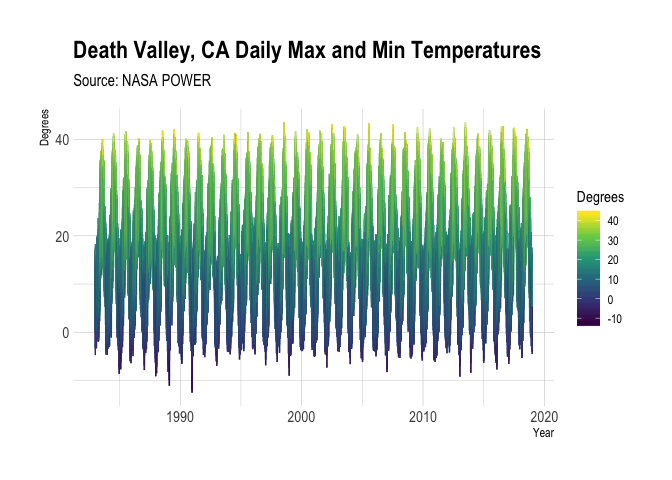
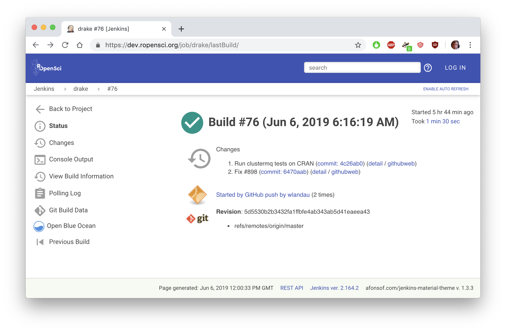

Jun 10, 2019
Software 📦
CRAN:  GitHub:
GitHub: 
New packages
- The first version (
v1.0) ofjenkinsis on CRAN - Simple Jenkins Client for R. Checkout the README to get started.

- The first version (
v2.0.14) ofbeastieris on CRAN - Provides a way to call BEAST2 from R. Checkout the docs to get started. - The first version (
v0.1.0) ofcolocris on CRAN - conduct co-localization analysis of fluorescence microscopy images. Checkout the vignette to get started. - The first version (
v0.0.2) ofplotdapis on CRAN - easily visualize data from ERDDAP servers via the rerddap package. Checkout the vignette to get started. - The first version (
v0.2.0) oframlegacyis on CRAN - download and read RAM legacy stock assessment database. Checkout the docs to get started. - The first version (
v0.1.0) ofrromeois on CRAN - access publisher copyright & self-archiving policies via the SHERPA/RoMEO API. Checkout the docs to get started. - The first version (
v0.1.1) oftidyncis on CRAN - a tidy approach to NetCDF data exploration and extraction. Checkout the docs to get started.
New Versions
- A new version (
v2.0.0) ofijtiffis on CRAN - Comprehensive TIFF I/O with full support for ImageJ TIFF files. See the release notes for changes. Checkout the docs to get started.
a few fxns changed names
- A new version (
v7.4.0) ofdrakeis on CRAN - a pipeline toolkit for reproducible computation at scale. See the release notes for changes. Checkout the docs to get started.
data splitting; URL tracking; advanced memory management
- A new version (
v0.2.6) offingertipsRis on CRAN - Fingertips data for public health http://fingertips.phe.org.uk/. See the release notes for changes. Checkout the vignettes to get started.
bug fixes for
nearest_neighbours()andindicator_order() - A new version (
v0.5.0) ofrorcidis on CRAN - Interface to the Orcid.org API. See the release notes for changes. Checkout the vignette to get started.
now works with ORCID’s v3 API (& new fxns); new fxns orcid_citations and orcid_search; many fixes
- A new version (
v0.3.0) oftacmagicis on CRAN - positron emission tomography time-activity curve analysis. See the release notes for changes. Checkout the vignette to get started.
radioactivity unit conversion for tac objects and numeric objects; conversion of a tac object to standardized uptake value (SUV) by controlling for weight and injected dose
- A new version (
v0.4.0) oftraitsis on CRAN - species trait data from around the web. See the release notes for changes. Checkout the README to get started.
many updates for betydb fxns; EOL Traitbank completely changed; bug fixes
- A new version (
v1.2) ofhydroscoperis on CRAN - interface to the Greek National Data Bank for Hydrological and Meteorological Information http://www.hydroscope.gr/. See the release notes for changes. Checkout the vignettes to get started.
removes plyr dependency
- A new version (
v1.3.1) ofMtreeRingis on CRAN - a shiny application for automatic measurements of tree-ring widths on digital images. See the release notes for changes. Checkout the docs to get started.
add plot parameter to
ring_read; all exported fxns renamed to snake_case style - A new version (
v1.0.6) ofskimris on CRAN - compact and flexible summaries of data. See the release notes for changes. Checkout the vignettes to get started. - A new version (
v0.3.1) ofcRegulomeis on CRAN - access, manage and visualize regulome (microRNA/transcription factors)-gene correlations in cancer. See the release notes for changes. Checkout the vignettes to get started.
fix a test
- A new version (
v2.0.0) ofrdataretrieveris on CRAN - R interface to the Data Retriever. See the release notes for changes. Checkout the README to get started.
new author Hashit Bansal; add spatial support; now using reticulate; new
get_citationfxn - A new version (
v1.0.1) ofrcitesis on CRAN - access the CITES Speciesplus database. See the release notes for changes. Checkout the docs to get started.
now using cli pkg; bug fixes
- A new version (
v1.1.1) ofbib2dfis on CRAN - parse a BibTeX file to a data frame. See the release notes for changes. Checkout the vignette to get started. - A new version (
v0.1.1) ofosmdatais on CRAN - import OpenStreetMap data as simple features or spatial objects. See the release notes for changes. Checkout the docs to get started.
bug fix in
trim_osmdatafunction - A new version (
v0.9.0) ofbiomartris on CRAN - Genomic Data Retrieval. See the release notes for changes. Checkout the vignettes to get started.
many new fxns and changes for existing fxns
- A new version (
v0.2.10) ofstplanris on CRAN - sustainable transport planning. See the release notes for changes. Checkout the docs to get started.
documentation fix
- A new version (
v1.4.0) ofrtimicropemis on CRAN - supports the analysis of RTI MicroPEM output files. See the release notes for changes. Checkout the docs to get started.
change dependency on pathological to fs
Software Review ✔
We accept community contributed packages via our onboarding system - an open software review system, sorta like scholarly paper review, but way better. We’ll highlight newly onboarded packages here. A huge thanks to our reviewers, who do a lot of work reviewing (see the blog post on our review system), and the authors of the packages!
If you want to be a reviewer fill out this short form, and we’ll ping you when there’s a submission that fits in your area of expertise.
The following packages were recently submitted:
- gitignore > Create useful .gitignore files for your project
- Author: Philippe Massicotte
- Issue: ropensci/onboarding#303
- Reviewers:
- tic > Tasks Integrating Continuously: CI-Agnostic Workflow Definitions
- Author: Kirill Müller
- Issue: ropensci/onboarding#305
- Reviewers:
- chlorpromazineR > Convert Antipsychotic Doses to Chlorpromazine Equivalents
- Author: Eric Brown
- Issue: ropensci/onboarding#307
- Reviewers: not yet assigned
- exoplanets > Provides access to NASA’s Exoplanet Archive, see https://exoplanetarchive.ipac.caltech.edu/index.html
- Author: Tyler Littlefield
- Issue: ropensci/onboarding#309
- Reviewers: not yet assigned
- rtweet > Collecting Twitter Data
- Author: Michael W. Kearney
- Issue: ropensci/onboarding#302
- Reviewers:
The following packages recently went through our onboarding process and have been approved:
- nbaR > R Package Client for the Netherlands Biodiversity API
- Author: Hannes Hettling
- Issue: ropensci/onboarding#257
- Reviewers:
- git2rdata > Store and Retrieve Data.frames in a Git Repository
- Author: Thierry Onkelinx
- Issue: ropensci/onboarding#263
- Reviewers:
- citesdb > A high-performance database of shipment-level CITES trade data
- Author: Noam Ross
- Issue: ropensci/onboarding#292
- Reviewers:
- MtreeRing > A Shiny Application for Automatic Measurements of Tree-Ring Widths on Digital Images
- Author: Jingning Shi
- Issue: ropensci/onboarding#287
- Reviewers:
On the blog
Main blog
We’re excited to announce the release of rOpenSci Dev Guide 0.2.0: Updates Inside and Out - authored by the rOpenSci Editors.

Software Review
Adam Sparks wrote a post POWER to the People about the nasapower package he maintains. The post includes how the package came about, some lessons learned during package development, and some cool usage examples.

Kshitiz Gupta and Carl Boettiger wrote a post on ramlegacy: a package for RAM Legacy Database for the ramlegacy package.
Matthias Grenié and Hugo Gruson wrote a post on Access Publisher Copyright & Self-Archiving Policies via the SHERPA/RoMEO API for their rromeo package.
Tech notes
Maëlle Salmon wrote a blog post about rodev: helpers for rOpenSci package authors. Check out the package.
Jeroen Ooms wrote about a significant piece infrastructure he’s been working on: Introducing the new rOpenSci docs server - a new service to automatically build and host documentation for all rOpenSci packages.

Use Cases
The following 17 works use/cite rOpenSci software:
- Van den Berg et al. used taxize in their paper Modeling the Sensitivity of Aquatic Macroinvertebrates to Chemicals Using Traits 1
- Van Strien et al. used plotly in their paper Resilience in social-ecological systems: identifying stable and unstable equilibria with agent-based models 2
- Bayer & Michael used hunspell and tesseract in their paper Exploring the Daschle Collection using Text Mining 3
- Ruiz & Gómez-Díaz used iheatmapr in their paper The second life of Plasmodium in the mosquito host: gene regulation on the move 4
- Baliga & Mehta used rgbif in their paper Morphology, ecology, and biogeography of independent origins of cleaning behavior around the world 5
- Estrela used assertr in their paper JCSP 44 PCEMI 44 Master of Defence Studies Maîtrise en études de la défense 6
- Falster et al. used datastorr in their paper Datastorr: a workflow and package for delivering successive versions of “evolving data” directly into R 7
- Barnett et al. used rentrez in their paper Turning the tables: A university league-table based on quality not quantity 8
- Kovacevic et al. used rotl in their paper Rate dynamics of ectotherm responses to thermal stress 9
- Schindler et al. used rplos in their paper An annotation scheme for references to research artefacts in scientific publications 10
- Piccione et al. used plotly in their paper Solvent Selection Methods and Tool 11
- Łagód et al. used plotly in their paper Application of Electronic Nose for Evaluation of Wastewater Treatment Process Effects at Full-Scale WWTP 12
- Kirsch et al. used plotly in their paper Coupling of Membrane Nanodomain Formation and Enhanced Electroporation near Phase Transition 13
- Evans et al. used phylotaR in their paper Bony Patchwork: Mosaic Patterns of Evolution in the Skull of Electric Fishes (Apteronotidae: Gymnotiformes) 14
- Forbes et al. used eechidna in their paper Spatial modelling of the two-party preferred vote in Australian federal elections: 2001-2016 15
- Colli‐Silva et al. used CoordinateCleaner in their paper Outstanding plant endemism levels strongly support the recognition of campo rupestre provinces in mountaintops of eastern South America 16
- Bhattarai et al. used MODIStsp in their paper An automated multi-model evapotranspiration mapping framework using remotely sensed and reanalysis data 17
There’s four recent use cases in the Use Cases section of the rOpenSci discussion forum:
- rcrossref for #tidytuesday by Jake Kaupp
- Using bib2df to parse the R Journal archives by Maëlle Salmon
- osmdata use case: Bicycle network analysis of Auckland by Kim Fitter
- get_clean_obs R Function (searching, pulling and cleaning citizen science records from iNaturalist and GBIF) by Keaton Wilson
Call For Contributors
Part of the mission of rOpenSci is making sustainable software that users can rely on. Some software maintainers need to give up maintenance due to a variety of circumstances. When that happens we try to find new maintainers. Checkout our Contributing Guide for why and how to contribute to rOpenSci.
We’ve had six recent examples of maintainer transitions within rOpenSci:
- RSelenium: now maintained by Ju Kim
- chromer: now maintained by Paula Andrea
- qualtRics: now maintained by Julia Silge
- rsnps: now maintained by Julia Gustavsen and Sina Rüeger
- rdpla: now maintained by Alyssa Columbus
- webchem: now maintained by Erik Sapper
We don’t have any packages looking for new maintainers - if you are a maintainer and want to hand over that role to someone else get in touch with us.
Related News
- Maëlle Salmon wrote a post on the R-hub blog Overview of the CRAN checks API about the CRAN checks API maintained by rOpenSci.
Keep up with rOpenSci
- Mailing list: Sign up with an email address to get this newsletter sent to your inbox -> ropensci.org/#subscribe
- Alternatively, you can subscribe to this newsletter via our XML feed at https://news.ropensci.org/feed.xml or our JSON feed at https://news.ropensci.org/feed.json
- rOpenSci on Twitter: @ropensci
- The rOpenSci blog at ropensci.org/blog - you can subscribe in any RSS aggregator, or manually via https://ropensci.org/feed.xml. We also announce new blog posts on our Twitter account.
Footnotes
-
Van den Berg, S. J. P., Baveco, H., Butler, E., De Laender, F., Focks, A., Franco, A., … Van den Brink, P. J. (2019). Modeling the Sensitivity of Aquatic Macroinvertebrates to Chemicals Using Traits. Environmental Science & Technology. https://doi.org/10.1021/acs.est.9b00893 ↩
-
Van Strien, M. J., Huber, S. H., Anderies, J. M., & Grêt-Regamey, A. (2019). Resilience in social-ecological systems: identifying stable and unstable equilibria with agent-based models. Ecology and Society, 24(2). https://doi.org/10.5751/es-10899-240208 ↩
-
Bayer, D., & Michael, S. (2019). Exploring the Daschle Collection using Text Mining. arXiv preprint arXiv:1904.12623 https://arxiv.org/pdf/1904.12623 ↩
-
Ruiz, J. L., & Gómez-Díaz, E. (2019). The second life of Plasmodium in the mosquito host: gene regulation on the move. Briefings in functional genomics. https://www.ncbi.nlm.nih.gov/pubmed/31058281 ↩
-
Baliga, V. B., & Mehta, R. S. (2019). Morphology, ecology, and biogeography of independent origins of cleaning behavior around the world. Integrative and comparative biology. https://doi.org/10.1093/icb/icz030 ↩
-
Estrela, M. J. (2019) JCSP 44 PCEMI 44 Master of Defence Studies Maîtrise en études de la défense. https://www.cfc.forces.gc.ca/papers/csc/csc44/mds/estrela.pdf ↩
-
Falster, D. S., FitzJohn, R. G., Pennell, M. W., & Cornwell, W. K. (2019). Datastorr: a workflow and package for delivering successive versions of “evolving data” directly into R. GigaScience, 8(5). https://doi.org/10.1093/gigascience/giz035 ↩
-
Barnett, A. G., & Moher, D. (2019). Turning the tables: A university league-table based on quality not quantity. F1000Research, 8, 583. https://doi.org/10.12688/f1000research.18453.1 ↩
-
Kovacevic, A., Latombe, G., & Chown, S. L. (2019). Rate dynamics of ectotherm responses to thermal stress. Proceedings of the Royal Society B: Biological Sciences, 286(1902), 20190174. https://doi.org/10.1098/rspb.2019.0174 ↩
-
Schindler, D., Yordanova, K., & Krüger, F. An annotation scheme for references to research artefacts in scientific publications. https://h-suwa.github.io/percomworkshops2019/papers/p52-schindler.pdf ↩
-
Piccione, P. M., Baumeister, J., Salvesen, T., Grosjean, C., Flores, Y., Groelly, E., … Lothschütz, C. (2019). Solvent Selection Methods and Tool. Organic Process Research & Development, 23(5), 998–1016. https://doi.org/10.1021/acs.oprd.9b00065 ↩
-
Łagód, G., Duda, S. M., Majerek, D., Szutt, A., & Dołhańczuk-Śródka, A. (2019). Application of Electronic Nose for Evaluation of Wastewater Treatment Process Effects at Full-Scale WWTP. Processes, 7(5), 251. https://doi.org/10.3390/pr7050251 ↩
-
Kirsch, S. A., & Böckmann, R. A. (2019). Coupling of Membrane Nanodomain Formation and Enhanced Electroporation near Phase Transition. Biophysical Journal. https://doi.org/10.1016/j.bpj.2019.04.024 ↩
-
Evans, K. M., Vidal-García, M., Tagliacollo, V. A., Taylor, S. J., & Fenolio, D. B. (2019). Bony Patchwork: Mosaic Patterns of Evolution in the Skull of Electric Fishes (Apteronotidae: Gymnotiformes). Integrative and Comparative Biology. https://doi.org/10.1093/icb/icz026 ↩
-
Jeremy Forbes, Dianne Cook, Rob J Hyndman. 2019. Spatial modelling of the two-party preferred vote in Australian federal elections: 2001-2016. Monash Econometrics and Business Statistics Working Papers 8/19, Monash University, Department of Econometrics and Business Statistics. https://ideas.repec.org/p/msh/ebswps/2019-8.html ↩
-
Colli‐Silva, M., Vasconcelos, T. N. C., & Pirani, J. R. (2019). Outstanding plant endemism levels strongly support the recognition of campo rupestre provinces in mountaintops of eastern South America. Journal of Biogeography. https://doi.org/10.1111/jbi.13585 ↩
-
Bhattarai, N., Mallick, K., Stuart, J., Vishwakarma, B. D., Niraula, R., Sen, S., & Jain, M. (2019). An automated multi-model evapotranspiration mapping framework using remotely sensed and reanalysis data. Remote Sensing of Environment, 229, 69–92. https://doi.org/10.1016/j.rse.2019.04.026 ↩